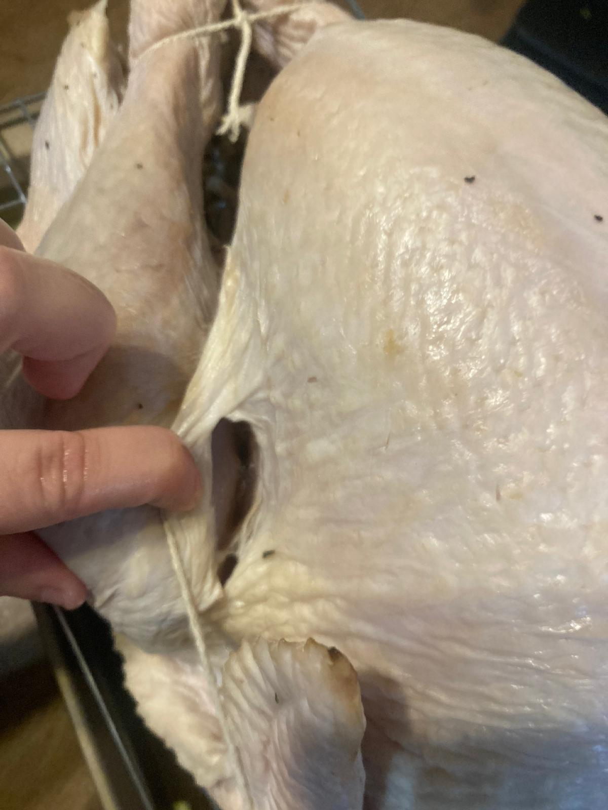
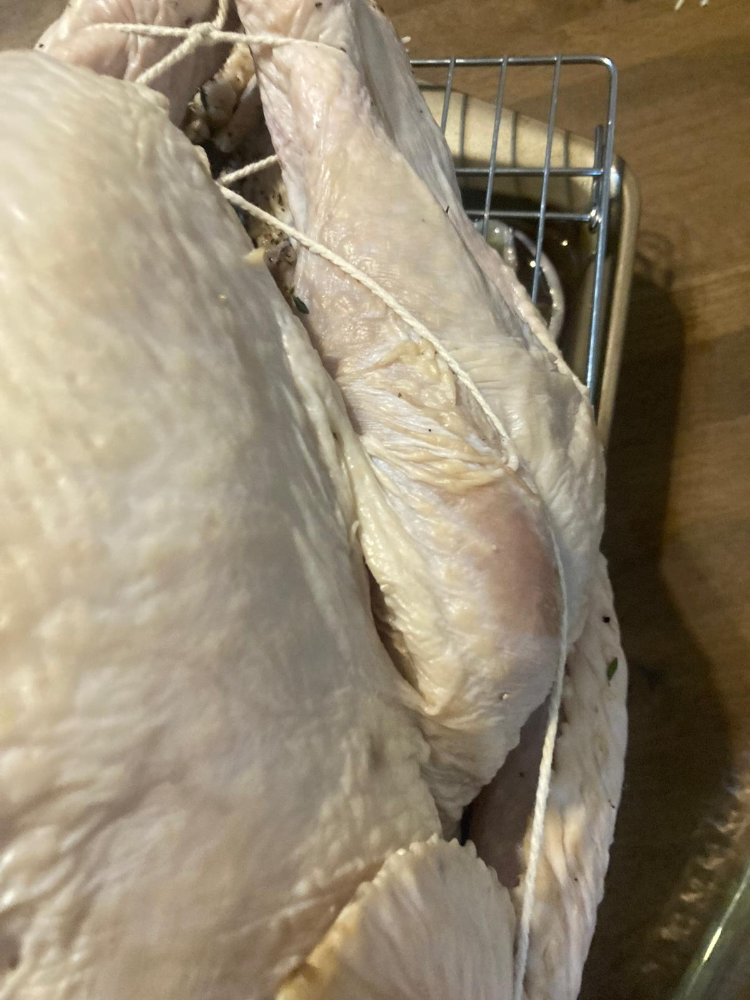
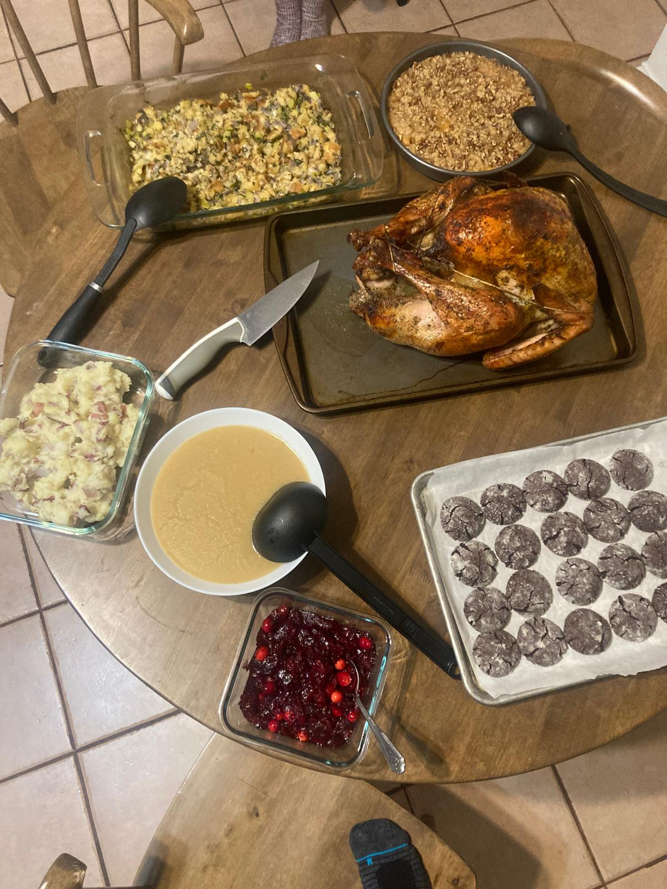

-
Timeline for turkey:
- Thursday before Thanksgiving: buy turkey and put it in the fridge to thaw for 3 days. I had a 16lb turkey.
- Tuesday morning: brine the turkey and put it in the fridge.
- Wednesday night: take turkey out of the brine and leave in the fridge uncovered. This will allow the skin to be more crispy.
- Thanksgiving Thursday: Cook the turkey, butter, etc.
- Take the thawed turkey out of the fridge. If it is not fully thawed yet, put it under cold water for a bit to thaw. Take the neck and offal out of the turkey. My turkey came pre-brined, but I will still brine it. I just need to be a bit more careful with the salt but this recipe already accounts for it.
- Cut the onion into 4 quarters, cut each of the garlic bulbs in half.
- In a big pot, throw in 8 cups of water, salt, brown sugar, Worcestershire sauce, black pepper, onion quarters, garlic halves, thyme, and bay leaves.
- Bring to a simmer and cook for 5 to 10min until the sugar and salt have dissolved
- Let it cool to room temperature.
- Take the turkey out of the fridge and put it in the brine bag, and pout the room temperature brine over the turkey. Add 30 cups of cold water until the turkey is covered. If your turkey was not pre-brined, add only 24 cups. Remove as much air in it as possible from inside and seal the bag well and put it in the fridge. My turkey was fully covered, so I don't need to do anything with it. If it is not fully covered, turn it in the bag half way through.
- On Wednesday night, take the turkey out of the brine and put it in an oven pan, let it sit in the fridge uncovered. Do not rinse. It could be a bit messy to take the turkey out of the brine bag. For me, since I was going to discard the bag, it helped to put it on the kitchen drain and poke a hole in the bag to drain the liquid, then take out the turkey.
- Soften the pound of butter in the microwave. Smash the garlic. Juice the lemon and zest it.
- Put all the herb butter ingredients in a food processor until chopped and smooth.
- Take the turkey out of the fridge. Tuck the twine underneath the neck end, then go next to the wings, make an x in the gap before the legs, and go around and over the legs to bring the drumsticks together. See picture.
- Preheat oven to 325 degrees Fahrenheit, and adjust the oven racks to fit the turkey. Note that likely some of the sides will need to go in the oven. In my case, I didn't have a grilling rack, so I had to use a cookie cooler but it worked out very well.
- On a grilling pan, throw in the onion, cut into wedges; the carrots, roughly chopped; the celery sticks, roughly chopped; the garlic, smashed; thyme; sage; and chicken stock. Set a roasting rack above these ingredients.
- Save a quarter of the herb butter to the side, and melt it in a small saucepan. This butter will be brushed on the turkey.
- Place the turkey on the roasting rack. Create a pocket between the breast and the skin using a knife and your hands. Use a knife to make a hole where the drums meet the thighs.
- This is the messy part! Take the remaining of the butter with your hands and rub it into the turkey, between the skin and the breast and between the skin and drumsticks. Be generous with the butter and go as far as you can. I used most of the butter but there was still some left over.
- Flip the turkey over on the roasting rack. Take the melted butter and brush it onto this back end. Be generous. Flip the turkey again and brush the rest of the melted butter on the up side. It's a lot of butter, but it's so worth it! Put a tiny bit of pepper on the turkey.
- Time to roast the turkey! Roast it for approximately 14min per pound, or until the inside reaches 160 degrees fahrenheit, checking and basting with the pan drippings every 40min. Rotate the pan every hour. I put the turkey in at 1:50 and took it out at 5:15, and it was 16lb. When the temperature is reached in all the turkey, remove from oven, and let it rest for 30min to 1h before eating.
- Happy Thanksgiving!
Brining the turkey:


Air drying the turkey:
Making the herb butter:

Trussing the turkey:
Preparing and cooking the turkey:


